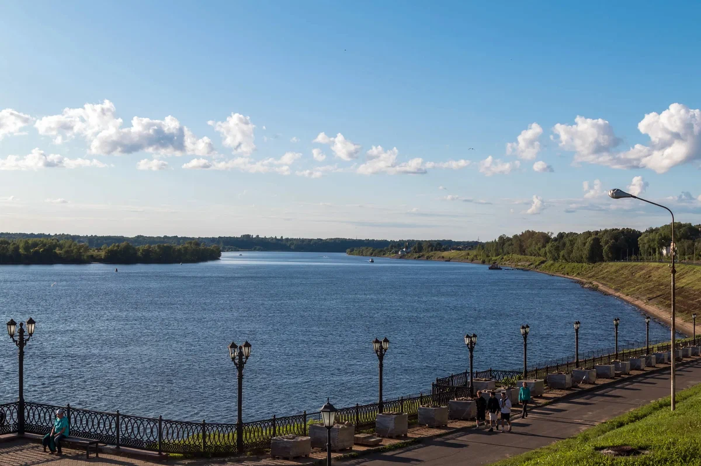
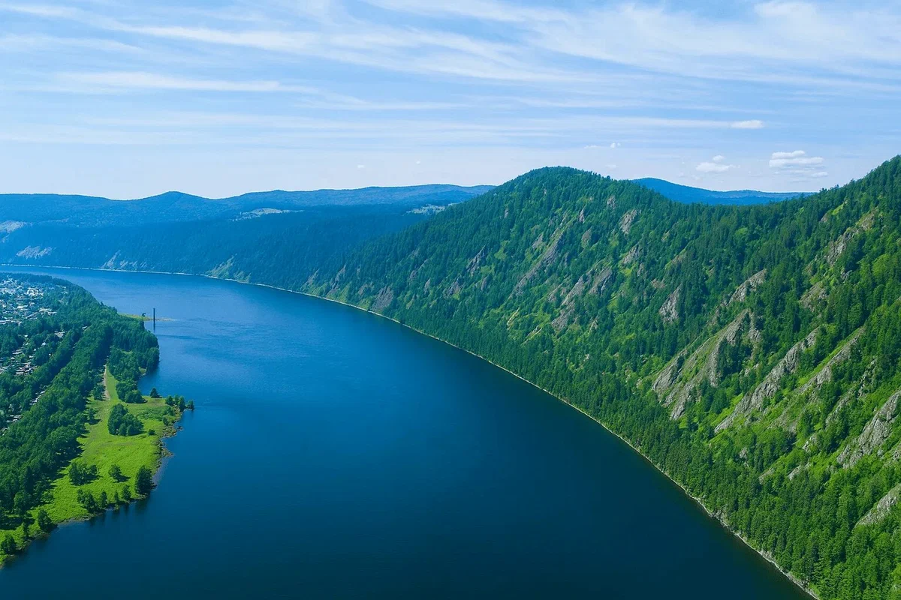

Крупнейшие реки России
«Познакомьтесь с реками России»

Река Волга
Основные характеристики
- Длина: 353 тыс. км (до постройки водохранилищ — 3,69 тыс. км).
- Площадь бассейна: 1,36 млн км² (8% территории РФ).
- Исток: ключ у деревни Волговерховье (Тверская область, Валдайская возвышенность), высота — 228 м над уровнем моря.
- Устье: Каспийское море (на 28 м ниже уровня моря).
- Годовой сток: около 250 км³.
- Расход воды у Волгограда: 806 тыс. м³/с.

Река Енисей
Основные характеристики
- Длина: 349 тыс. км (от места слияния Большого и Малого Енисея); с Малым Енисеем — до 4,29 тыс. км.
- Площадь бассейна: 2,58 млн км² (второй по величине в России, после Оби).
- Исток: слияние рек Большой Енисей (Бий-Хем) и Малый Енисей (Ка-Хем) у города Кызыл (Республика Тыва) — географического центра Азии.
- Устье: Енисейский залив Карского моря (Северный Ледовитый океан).
- Средний расход воды: около 18,5 тыс. м³/с — это самая полноводная река России.
- Годовой сток: до 625 км³.